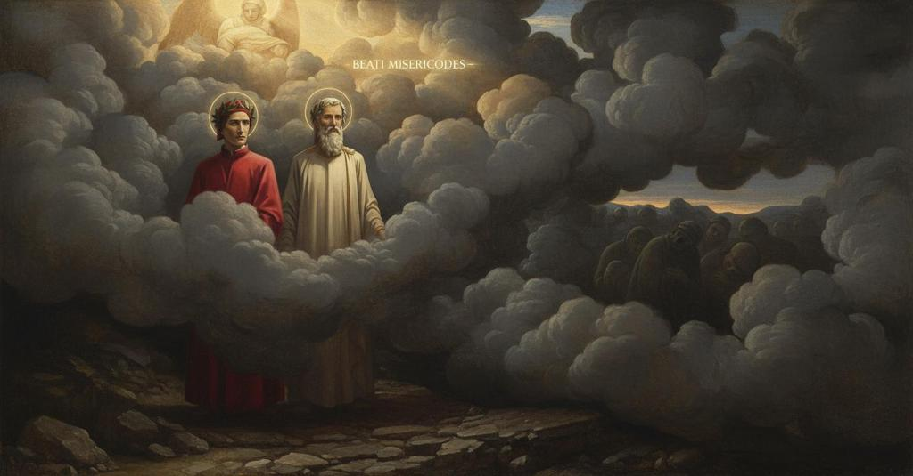

Purgatorio — Canto 15

Guided by the Angel of Mercy, Dante ascends to the third terrace where, after Virgil's discourse on shared good and visions of meekness, a blinding smoke engulfs the poets. 嫉妬の圏を浄めたダンテは、慈悲の天使に導かれ憤怒の圏へ至り、柔和の幻視を体験した後、罰である濃い煙の中へと進んでいく。
1
Quanto tra l’ultimar de l’ora terza
As much as between the end of the third hour
第三時の終わりと
2
e ’l principio del dì par de la spera
and the day’s beginning appears of the sphere
日の出の始めとの間に
3
che sempre a guisa di fanciullo scherza,
that always plays in the guise of a child,
常に子供のように戯れる天球が示すのと同じだけの時間が、
4
tanto pareva già inver’ la sera
so much seemed already toward the evening
まさに夕暮れに向かって
5
essere al sol del suo corso rimaso;
to be remaining for the sun of its course;
太陽がその道程に残しているように
6
vespero là, e qui mezza notte era.
it was vespers there, and here midnight.
思われた。向こうは宵の口、そしてこちらは真夜中であった。
7
E i raggi ne ferien per mezzo ’l naso,
And the rays were striking us through the middle of the nose,
そして光線は我らの鼻の真ん中を射ていた、
8
perché per noi girato era sì ’l monte,
because the mountain had been so circled by us,
なぜなら我らのために山はそれほど向きを変えていたので、
9
che già dritti andavamo inver’ l’occaso,
that we were now going straight toward the west,
我らはすでに真っ直ぐ日没の方へ向かっていたのだ、
10
quand’ io senti’ a me gravar la fronte
when I felt my brow weighed down
その時、私は額が重くなるのを感じた
11
a lo splendore assai più che di prima,
by a splendor far more than before,
以前よりもずっと強い輝きに、
12
e stupor m’eran le cose non conte;
and things unknown were a wonder to me;
そして未知の事柄に私は驚愕した。
13
ond’ io levai le mani inver’ la cima
wherefore I raised my hands toward the top
そこで私は両手を頂へと上げた
14
de le mie ciglia, e fecimi ’l solecchio,
of my brows, and made myself a sun-shield,
我が眉の、そして私は日よけを作った、
15
che del soverchio visibile lima.
which files away the excess of the visible.
過剰な可視光を削り取るものを。
16
Come quando da l’acqua o da lo specchio
As when from water or from a mirror
水面あるいは鏡から
17
salta lo raggio a l’opposita parte,
the ray leaps to the opposite side,
光線が反対側へと跳ね返り、
18
salendo su per lo modo parecchio
rising up in the same way
降下するのと同じ仕方で上昇し、
19
a quel che scende, e tanto si diparte
as that which descends, and departs as much
石が垂直に落ちる線から
20
dal cader de la pietra in igual tratta,
from the fall of a stone in equal measure,
等しい距離でそれだけ離れるように、
21
sì come mostra esperïenza e arte;
as experience and science show;
経験と術が示すように。
22
così mi parve da luce rifratta
so it seemed to me by reflected light
そのように私は反射された光によって
23
quivi dinanzi a me esser percosso;
there before me to be struck;
ここ、私の前で打たれたように思われた。
24
per che a fuggir la mia vista fu ratta.
for which my sight was quick to flee.
そのため私の視線は素早く逃げ去った。
25
«Che è quel, dolce padre, a che non posso
“What is that, sweet father, from which I cannot
「あれは何ですか、優しき父よ、それに対して私は
26
schermar lo viso tanto che mi vaglia»,
shield my face so that it avails me,”
顔を覆っても役に立たないほどで」
27
diss’ io, «e pare inver’ noi esser mosso?».
I said, “and seems to be moving toward us?”.
私は言った、「そして我らに向かって動いているように見えますが？」。
28
«Non ti maravigliar s’ancor t’abbaglia
“Do not marvel if it still dazzles you,
「天の眷属がなお汝を幻惑させても驚くでない」
29
la famiglia del cielo», a me rispuose:
the family of heaven,” he answered me:
と彼は私に答えた、
30
«messo è che viene ad invitar ch’om saglia.
“it is a messenger who comes to invite one to ascend.
「人が登るよう招きに来た使者である。
31
Tosto sarà ch’a veder queste cose
Soon it will be that to see these things
やがてこれらのことを見るのが
32
non ti fia grave, ma fieti diletto
will not be grievous to you, but will be a delight
汝にとって辛くなく、むしろ喜びとなるだろう、
33
quanto natura a sentir ti dispuose».
as great as nature has disposed you to feel.”
自然が汝に感じるよう備えさせた限りにおいて」。
34
Poi giunti fummo a l’angel benedetto,
Then we came to the blessed angel,
やがて我らは祝福された天使のもとに着くと、
35
con lieta voce disse: «Intrate quinci
who with a joyful voice said: “Enter here
彼は喜ばしげな声で言った、「ここから入りなさい
36
ad un scaleo vie men che li altri eretto».
to a stairway far less steep than the others.”
他のものよりずっと険しくない階段へ」。
37
Noi montavam, già partiti di linci,
We were climbing, having already departed from there,
我らは登った、すでにそこを離れて、
38
e ‘Beati misericordes!’ fue
and ‘Blessed are the merciful!’ was
そして「憐れみ深き者は幸いなり！」と
39
cantato retro, e ‘Godi tu che vinci!’.
sung behind, and ‘Rejoice, you who overcome!’.
背後で歌われ、「汝、打ち勝つ者よ、喜べ！」と続いた。
40
Lo mio maestro e io soli amendue
My master and I, we two alone,
我が師と私、ただ二人きりで
41
suso andavamo; e io pensai, andando,
were going upward; and I thought, while walking,
上へと進んだ。そして私は歩きながら考えた、
42
prode acquistar ne le parole sue;
to gain profit from his words;
師の言葉から益を得ようと。
43
e dirizza’mi a lui sì dimandando:
and I addressed myself to him, asking thus:
そして師に向き直り、こう尋ねた。
44
«Che volse dir lo spirto di Romagna,
"What did the spirit from Romagna mean,
「ロマーニャの魂が言いたかったことは何ですか、
45
e ‘divieto’ e ‘consorte’ menzionando?».
mentioning 'prohibition' and 'partnership'?".
『禁止』と『共有』という言葉に言及して？」。
46
Per ch’elli a me: «Di sua maggior magagna
At which he to me: "Of his greatest fault
すると師は私に言った。「自らの最大の欠点の
47
conosce il danno; e però non s’ammiri
he knows the damage; and therefore let no one wonder
害を知っているのだ。だから驚くには及ばぬ、
48
se ne riprende perché men si piagna.
if he rebukes it, so that there may be less weeping.
そのために嘆きが減るよう、彼がそれを非難するのを。
49
Perché s’appuntano i vostri disiri
Because your desires are set
なぜなら、そなたらの欲望は向けられる、
50
dove per compagnia parte si scema,
where by partnership a share is diminished,
仲間がいることで分け前が減るものへと。
51
invidia move il mantaco a’ sospiri.
envy moves the bellows to your sighs.
嫉妬がその溜息に鞴（ふいご）を動かすのだ。
52
Ma se l’amor de la spera supprema
But if the love of the highest sphere
だが、もし至高の天球への愛が
53
torcesse in suso il disiderio vostro,
were to turn your desire upward,
そなたらの欲望を上へ向けたなら、
54
non vi sarebbe al petto quella tema;
that fear would not be in your breast;
そなたらの胸にその恐れはなくなるであろう。
55
ché, per quanti si dice più lì ‘nostro’,
for, by as many as there say 'ours',
なぜなら、そこでは『我らのもの』と言う者が多いほど、
56
tanto possiede più di ben ciascuno,
so much more of good does each one possess,
それだけ各人がより多くの善を所有し、
57
e più di caritate arde in quel chiostro».
and more of charity burns in that cloister".
その回廊ではより多くの慈愛が燃え盛るのだ」。
58
«Io son d’esser contento più digiuno»,
"I am more hungry to be satisfied",
「私は満足からますます飢えています」
59
diss’ io, «che se mi fosse pria taciuto,
I said, "than if you had first been silent,
と私は言った。「もし初めから黙されていたよりも、
60
e più di dubbio ne la mente aduno.
and more of doubt I gather in my mind.
そして心にはより多くの疑いを集めています。
61
Com’ esser puote ch’un ben, distributo
How can it be that a good, distributed
どうしてあり得るのですか、一つの善が、分配されて
62
in più posseditor, faccia più ricchi
among more possessors, makes them richer
より多くの所有者に行き渡ると、より豊かにするとは
63
di sé che se da pochi è posseduto?».
in it than if it is possessed by few?".
少数の者に所有されている場合よりも？」。
64
Ed elli a me: «Però che tu rificchi
And he to me: "Because you fix
すると師は私に言った。「そなたが心を
65
la mente pur a le cose terrene,
your mind only on earthly things,
もっぱら地上の物事だけに突き刺すゆえに、
66
di vera luce tenebre dispicchi.
from true light you pluck darkness.
真の光から闇をもぎ取っているのだ。
67
Quello infinito e ineffabil bene
That infinite and ineffable good
かの無限にして言葉に尽くせぬ善は、
68
che là sù è, così corre ad amore
that is there above, so runs to love
彼方の上にあるが、愛へと駆け寄る、
69
com’ a lucido corpo raggio vene.
as a ray of light comes to a shining body.
輝く体に光線が差すように。
70
Tanto si dà quanto trova d’ardore;
It gives so much as it finds of ardor;
見出した熱情の分だけ自らを与える。
71
sì che, quantunque carità si stende,
so that, however far charity extends,
それゆえ、慈愛が広がる限り、
72
cresce sovr’ essa l’etterno valore.
the eternal worth increases over it.
その上には永遠の価値が増していく。
73
E quanta gente più là sù s’intende,
And the more people up there who understand,
そして、彼方の上で心を向ける者が多いほど、
74
più v’è da bene amare, e più vi s’ama,
the more there are to love well, and the more love there is,
そこには愛すべき善が多くなり、より多く愛され、
75
e come specchio l’uno a l’altro rende.
and like a mirror one gives back to the other.
鏡のように互いが互いにそれを返すのだ。
76
E se la mia ragion non ti disfama,
And if my reasoning does not satisfy your hunger,
そして、もし私の理屈がそなたの飢えを満たさぬなら、
77
vedrai Beatrice, ed ella pienamente
you will see Beatrice, and she fully
ベアトリーチェに会うだろう。彼女が完全に
78
ti torrà questa e ciascun’ altra brama.
will take from you this and every other craving.
そなたからこの、そして他のあらゆる渇望を取り去るだろう。
79
Procaccia pur che tosto sieno spente,
Strive, then, that soon may be extinguished,
ただ努めるがよい、速やかに消されるように、
80
come son già le due, le cinque piaghe,
as are the two already, the five wounds
すでに二つが消えたように、残る五つの傷が。
81
che si richiudon per esser dolente».
which are closed up by being sorrowful".
それらは悲しむ（痛悔する）ことによって癒されるのだ」。
82
Com’ io voleva dicer ‘Tu m’appaghe’,
As I wished to say 'You satisfy me',
「貴方は私を満足させてくれる」と私が言おうとした時、
83
vidimi giunto in su l’altro girone,
I saw myself arrived on the other circle,
私は自分がもう一つの環道に着いているのを見た、
84
sì che tacer mi fer le luci vaghe.
so that my eager eyes made me fall silent.
それゆえ、心奪われた眼は私を沈黙させた。
85
Ivi mi parve in una visïone
There it seemed to me in a vision
そこで私は、ある幻視のうちに
86
estatica di sùbito esser tratto,
ecstatic to be suddenly drawn,
突如として我を忘れて引き込まれたように思われ、
87
e vedere in un tempio più persone;
and to see in a temple several people;
神殿の中に幾人かの人々を見るのだった。
88
e una donna, in su l’entrar, con atto
and a lady, at the entrance, with the gesture
そして一人の婦人が、入り口で、
89
dolce di madre dicer: «Figliuol mio,
sweet of a mother saying: "My son,
母の優しき仕草で言うのを。「我が子よ、
90
perché hai tu così verso noi fatto?
why have you acted thus toward us?
なぜそなたは我らにこのようなことをしたのか。
91
Ecco, dolenti, lo tuo padre e io
Behold, grieving, your father and I
見よ、悲しみながら、そなたの父と私は
92
ti cercavamo». E come qui si tacque,
were searching for you." And as she here fell silent,
そなたを探していたのだ」。そして彼女がここで黙ると、
93
ciò che pareva prima, dispario.
that which appeared before, disappeared.
先に見えていたものは、消え去った。
94
Indi m’apparve un’altra con quell’ acque
Then another appeared to me with those waters
次に私に現れたのは、別の婦人で、あの涙を
95
giù per le gote che ’l dolor distilla
down her cheeks that grief distills
頬に伝わせていた。それは、苦悩が滴らせる涙で、
96
quando di gran dispetto in altrui nacque,
when it is born of great scorn from another,
大いなる侮辱が他者から生まれた時のものだった。
97
e dir: «Se tu se’ sire de la villa
and saying: "If you are lord of the city
そして言うのだった。「もしあなたが、あの都の主君であるなら、
98
del cui nome ne’ dèi fu tanta lite,
for whose name there was such strife among the gods,
神々の間でその名を巡って大いなる争いがあった都の、
99
e onde ogne scïenza disfavilla,
and from which every science sparkles,
そしてそこからあらゆる学問が輝き出る都の、
100
vendica te di quelle braccia ardite
avenge yourself on those bold arms
あの図々しい腕に復讐なされよ、
101
ch’abbracciar nostra figlia, o Pisistràto».
that embraced our daughter, O Pisistratus."
我らの娘を抱きしめた腕に、おお、ピシストラトスよ」。
102
E ’l segnor mi parea, benigno e mite,
And the lord seemed to me, benign and mild,
そしてその君主は私には、慈悲深く穏やかに、
103
risponder lei con viso temperato:
to answer her with a temperate face:
節度ある顔で彼女に答えるように思われた。
104
«Che farem noi a chi mal ne disira,
"What shall we do to one who wishes us ill,
「我らに悪意を抱く者に、我々は何をしようか、
105
se quei che ci ama è per noi condannato?»,
if he who loves us is by us condemned?"
もし我らを愛する者さえ、我々によって罰せられるのなら」。
106
Poi vidi genti accese in foco d’ira
Then I saw people kindled in the fire of wrath
それから私は、怒りの炎に燃えた人々が
107
con pietre un giovinetto ancider, forte
with stones slay a young man, loudly
石で一人の若者を殺し、激しく
108
gridando a sé pur: «Martira, martira!».
shouting to one another: "Kill, kill!"
互いに叫び続けているのを見た。「殉教させろ、殉教させろ！」。
109
E lui vedea chinarsi, per la morte
And I saw him sinking, because of death
そして私は彼が、死のために、身をかがめるのを見た。
110
che l’aggravava già, inver’ la terra,
that was already weighing him down, toward the earth,
それはすでに彼を重くし、大地の方へと向かわせていたが、
111
ma de li occhi facea sempre al ciel porte,
but of his eyes he always made gates to heaven,
しかしその眼は常に天への門としていた。
112
orando a l’alto Sire, in tanta guerra,
praying to the high Lord, in such strife,
かくも激しい戦いの中、高き主君に祈りながら、
113
che perdonasse a’ suoi persecutori,
that he forgive his persecutors,
彼の迫害者たちを赦したもうようにと、
114
con quello aspetto che pietà diserra.
with that look that unlocks pity.
憐れみを解き放つあの面持ちで。
115
Quando l’anima mia tornò di fori
When my soul returned outward
わが魂が外へと戻り
116
a le cose che son fuor di lei vere,
to the things that are true outside of it,
それ自体の外にある真実の物事へと帰った時、
117
io riconobbi i miei non falsi errori.
I recognized my not-false errors.
私は、わが偽りならぬ過ちを認識した。
118
Lo duca mio, che mi potea vedere
My leader, who could see me
わが導き手は、私が見えるので
119
far sì com’ om che dal sonno si slega,
acting like a man who frees himself from sleep,
眠りから解き放たれる者のように振る舞うのを、
120
disse: «Che hai che non ti puoi tenere,
said: “What is it that you cannot hold yourself up,
言った、「どうしたのだ、体を支えられないとは、
121
ma se’ venuto più che mezza lega
but have come more than half a league
半レガ以上も来たではないか
122
velando li occhi e con le gambe avvolte,
veiling your eyes and with your legs tangled,
目を覆い、脚をもつれさせながら、
123
a guisa di cui vino o sonno piega?».
like one whom wine or sleep overcomes?”
酒か眠りに打ち負かされた者のように？」。
124
«O dolce padre mio, se tu m’ascolte,
“O my sweet father, if you will listen to me,
「おお、わが優しき父よ、もしお聞きくださるなら、
125
io ti dirò», diss’ io, «ciò che m’apparve
I will tell you,” I said, “what appeared to me
私はお話ししましょう」と私は言った、「私に現れたものを
126
quando le gambe mi furon sì tolte».
when my legs were so taken from me.”
私の脚があのように奪われた時のことを」。
127
Ed ei: «Se tu avessi cento larve
And he: “If you had a hundred masks
すると彼は、「そなたが百の仮面を
128
sovra la faccia, non mi sarian chiuse
upon your face, your thoughts, however small,
顔にかぶっていようとも、私には閉ざされぬ
129
le tue cogitazion, quantunque parve.
would not be hidden from me.
そなたの思考は、いかに些細なものであろうと。
130
Ciò che vedesti fu perché non scuse
What you saw was so you have no excuse
そなたが見たのは、そなたが拒まぬようにするためだ
131
d’aprir lo core a l’acque de la pace
from opening your heart to the waters of peace
平和の水に心を開くことを
132
che da l’etterno fonte son diffuse.
that are poured out from the eternal fountain.
永遠の泉から流れ出るその水に。
133
Non dimandai “Che hai?” per quel che face
I did not ask ‘What is wrong?’ as one does
私が「どうしたのだ」と尋ねたのは、する者のようではない
134
chi guarda pur con l’occhio che non vede,
who looks only with the eye that does not see,
見ることのない目でただ見る者のように
135
quando disanimato il corpo giace;
when the body lies unanimated;
体が魂を失って横たわっている時に。
136
ma dimandai per darti forza al piede:
but I asked to give strength to your foot:
私が尋ねたのは、そなたの足に力を与えるためだ。
137
così frugar conviensi i pigri, lenti
thus it is necessary to spur on the lazy, who are slow
そのように、怠惰な者、すなわち遅い者たちを促すのがふさわしいのだ
138
ad usar lor vigilia quando riede».
to use their waking hours when they return.”
目覚めが戻った時に、それを用いるのが」。
139
Noi andavam per lo vespero, attenti
We were walking through the evening, attentive
我々は夕暮れの中を進んでいた、注意深く
140
oltre quanto potean li occhi allungarsi
beyond how far the eyes could stretch
目が届く限り遠くへと
141
contra i raggi serotini e lucenti.
against the late and shining rays.
夕暮れの輝かしい光に向かって。
142
Ed ecco a poco a poco un fummo farsi
And behold, little by little a smoke began to form
すると、徐々に一つの煙が立ちのぼり
143
verso di noi come la notte oscuro;
toward us, as dark as the night;
我々の方へ、夜のように暗く、
144
né da quello era loco da cansarsi.
and there was no place to take shelter from it.
そして、そこから逃れる場所はなかった。
145
Questo ne tolse li occhi e l’aere puro.
This took from us our eyes and the pure air.
これが我々から視界と清らかな空気を奪った。